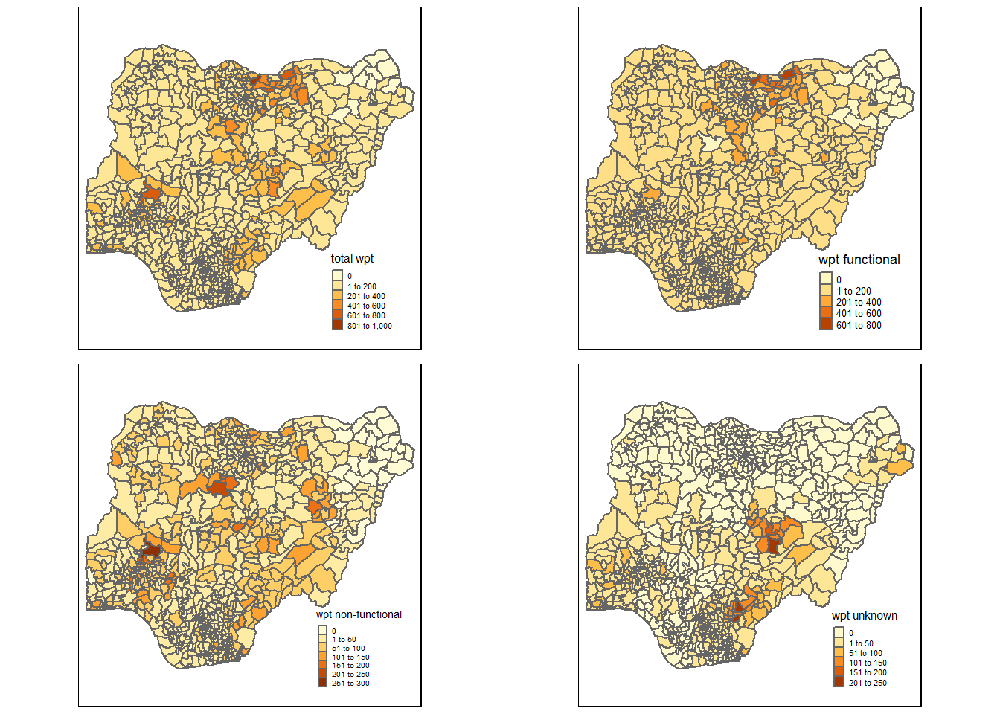
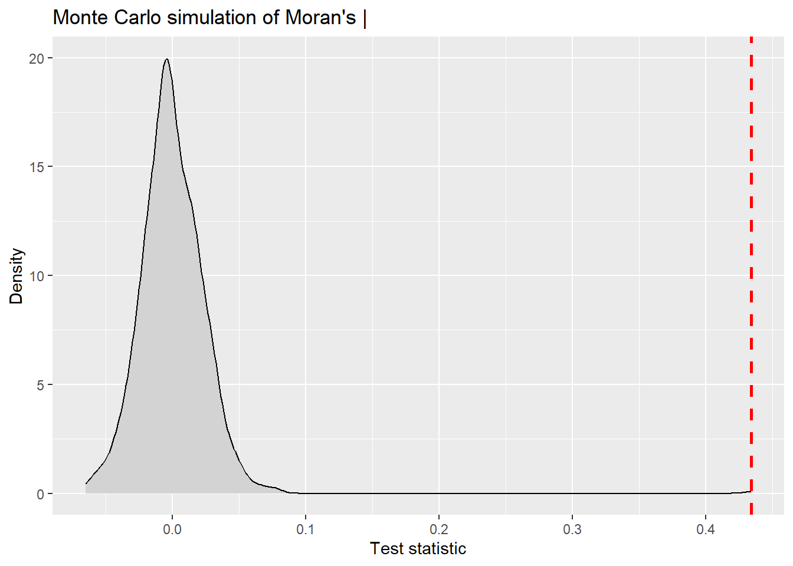
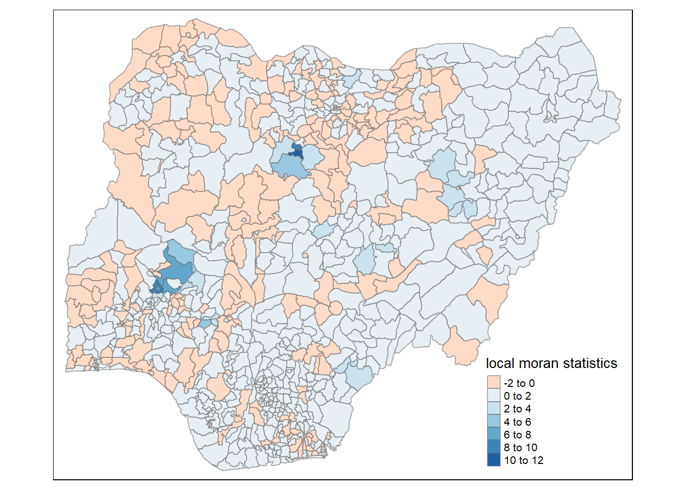
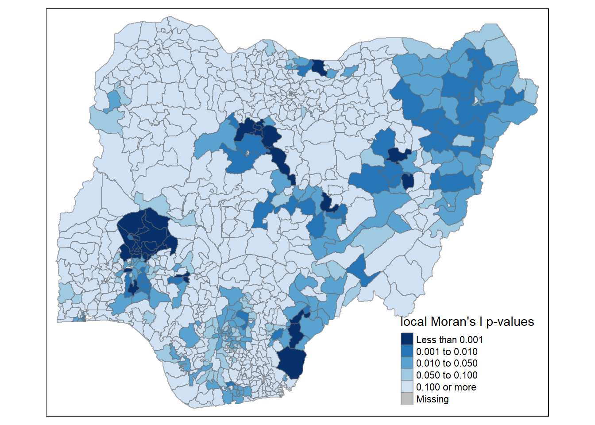
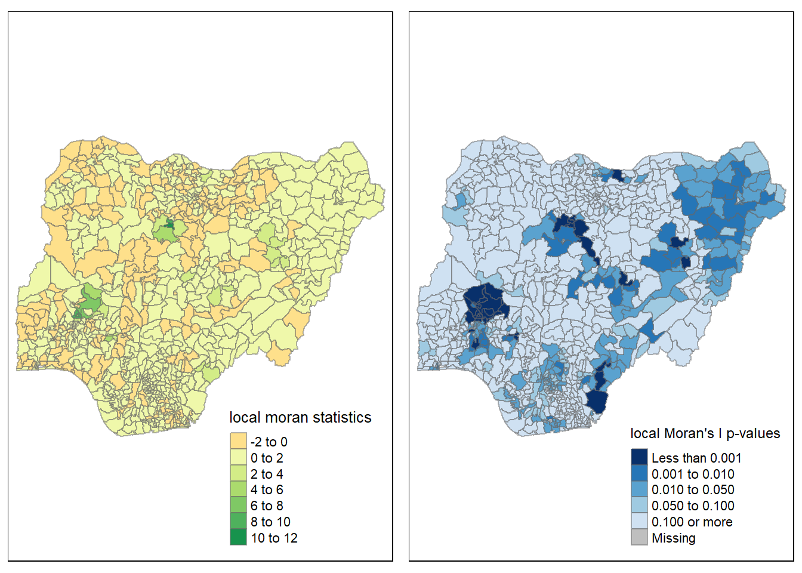

pacman::p_load(sf, tidyverse, tmap, spdep, funModeling)Take home Exercise 1
Take-home Exercise 1: Geospatial Analytics for Social Good
Setting the Scene
Water is an important resource to mankind. Clean and accessible water is critical to human health. It provides a healthy environment, a sustainable economy, reduces poverty and ensures peace and security. Yet over 40% of the global population does not have access to sufficient clean water. By 2025, 1.8 billion people will be living in countries or regions with absolute water scarcity, according to UN-Water. The lack of water poses a major threat to several sectors, including food security. Agriculture uses about 70% of the world's accessible freshwater.
Developing countries are most affected by water shortages and poor water quality. Up to 80% of illnesses in the developing world are linked to inadequate water and sanitation. Despite technological advancement, providing clean water to the rural community is still a major development issues in many countries globally, especially countries in the Africa continent.
To address the issue of providing clean and sustainable water supply to the rural community, a global Water Point Data Exchange (WPdx) project has been initiated. The main aim of this initiative is to collect water point related data from rural areas at the water point or small water scheme level and share the data via WPdx Data Repository, a cloud-based data library. What is so special of this project is that data are collected based on WPDx Data Standard.
Getting Started
In the code chunk below, p_load() of pacman package is used to install and load the following R packages into R environment:
sf,
tidyverse,
tmap,
spdep, and
funModeling will be used for rapid Exploratory Data Analysis
In this in-class data, two geospatial data sets will be used, they are:
geo_export
nga_admbnda_adm2_osgod_20190417
Importing water point geospatial data
First, we are going to import the water point geospatial data by using the code chunk below.
wp <- st_read(dsn = "geodata",
layer = "geo_export",
crs = 4326)%>%
filter(clean_coun == "Nigeria")next, write_rds() of readr package is used to save the extracted sf data table into an output file in rds data format. The output file is called wp_nga.rds and is is save in geodata subfoulder.
write_rds(wp, "geodata/wp_nga.rds")Next, we are going to import the LGA boundary data into R environment by using the code chunk below.
nga <- st_read(dsn = "geodata",
layer = "nga_admbnda_adm2_osgof_20190417",
crs = 4326)Data Wrangling
Recoding NA values into string
In the code chunk below, replace_na() is used to recode all the NA values in status_cle field into unknow,
wp_nga <- read_rds("geodata/wp_nga.rds")%>%
mutate(status_cle = replace_na(status_cle, "Unknown"))EDA
In the code chunk below, freq() of funModeling package is used to display the distribution of status_cle field in wp_nga.
freq(data = wp_nga,
input = 'status_cle')Extracting funtional water point
using classes in status_cle field.
wpt_functional <- wp_nga %>%
filter(status_cle %in%
c("Functional",
"Functional but not in use",
"Functional but needs repair"))freq(data=wpt_functional,
input = 'status_cle')So all functional data will be called as wpt_functional.
Similarly for non-functional water point.
wpt_nonfunctional <- wp_nga %>%
filter(status_cle %in%
c("Abandoned/Decommissioned",
"Abandoned",
"Non-Functional",
"Non functional due to dry season",
"Non-Functional due to dry season"))Extracting water point with Unknown class.
Using filter() of dplyr to select water points with unknown status.
wpt_unknown <- wp_nga %>%
filter(status_cle == "Unknown")Performing point in polygon count
nga_wp <- nga %>%
mutate(`total wpt` = lengths(
st_intersects(nga, wp_nga))) %>%
mutate(`wpt functional` = lengths(
st_intersects(nga, wpt_functional))) %>%
mutate(`wpt non-functional` = lengths(
st_intersects(nga, wpt_nonfunctional))) %>%
mutate(`wpt unknown` = lengths(
st_intersects(nga, wpt_unknown)))Saving the Analytical Data Table
nga_wp <- nga_wp %>%
mutate(pct_functional = `wpt functional`/`total wpt`) %>%
mutate(`pct_non-functional` = `wpt non-functional`/`total wpt`) %>%
select(3:4, 9:10, 18:23)Now I got the tidy sf data table and we will save the sf data table in rds format.
write_rds(nga_wp, "geodata/nga_wp.rds")Visualising the spatial distribution of water points
nga_wp <- read_rds("geodata/nga_wp.rds")
total <- qtm(nga_wp, "total wpt") +
tm_layout(legend.height = 0.25, legend.width = 0.35)
wp_functional <- qtm(nga_wp, "wpt functional") +
tm_layout(legend.height = 0.25, legend.width = 0.35)
wp_nonfunctional <- qtm(nga_wp, "wpt non-functional") +
tm_layout(legend.height = 0.25, legend.width = 0.35)
unknown <- qtm(nga_wp, "wpt unknown") +
tm_layout(legend.height = 0.25, legend.width = 0.35)
tmap_arrange(total, wp_functional, wp_nonfunctional, unknown, asp=1, ncol=2 )
Computing (Queen) contiguity based neighbours
wm_q <- poly2nb(nga_wp, queen = TRUE)
summary(wm_q)Neighbour list object:
Number of regions: 774
Number of nonzero links: 4440
Percentage nonzero weights: 0.7411414
Average number of links: 5.736434
1 region with no links:
86
Link number distribution:
0 1 2 3 4 5 6 7 8 9 10 11 12 14
1 2 14 57 125 182 140 122 72 41 12 4 1 1
2 least connected regions:
138 560 with 1 link
1 most connected region:
508 with 14 linksThe summary report shows that there are 774 region in Nigeria. Region 86 has no neighbour, 138 and 506 has only 1 neighbour and region 508 has the most number of neighbour 14.
wm_q[[1]][1] 2 548 624 721nga_wp$ADM2_EN[1][1] "Aba North"nb1 <- wm_q[[1]]
nb1 <- nga_wp$ADM2_EN[nb1]
nb1[1] "Aba South" "Obi Ngwa" "Osisioma Ngwa" "Ugwunagbo" set.ZeroPolicyOption(TRUE)[1] FALSErswm_q <- nb2listw(wm_q,
style = "W",
zero.policy = TRUE)
rswm_qCharacteristics of weights list object:
Neighbour list object:
Number of regions: 774
Number of nonzero links: 4440
Percentage nonzero weights: 0.7411414
Average number of links: 5.736434
1 region with no links:
86
Weights style: W
Weights constants summary:
n nn S0 S1 S2
W 773 597529 773 285.0658 3198.414Maron’s | test
moran.test(nga_wp$`wpt non-functional`,
listw = rswm_q,
zero.policy = TRUE,
na.action = na.omit)
Moran I test under randomisation
data: nga_wp$`wpt non-functional`
weights: rswm_q n reduced by no-neighbour observations
Moran I statistic standard deviate = 20.043, p-value < 2.2e-16
alternative hypothesis: greater
sample estimates:
Moran I statistic Expectation Variance
0.433932927 -0.001295337 0.000471516 Computing Monte Carlo Moran’s |
set.seed(1234)
bperm = moran.mc(nga_wp$`wpt non-functional`,
listw = rswm_q,
nsim = 999,
zero.policy = TRUE,
na.action = na.omit)
bperm
Monte-Carlo simulation of Moran I
data: nga_wp$`wpt non-functional`
weights: rswm_q
number of simulations + 1: 1000
statistic = 0.43393, observed rank = 1000, p-value = 0.001
alternative hypothesis: greaterVisualising Monte Carlo Moran’s |
mean(bperm$res[1:999])[1] -0.0005316305var(bperm$res[1:999])[1] 0.0004973974summary(bperm$res[1:999]) Min. 1st Qu. Median Mean 3rd Qu. Max.
-0.0651127 -0.0150421 -0.0020783 -0.0005316 0.0143726 0.0798599 ggplot(as.data.frame(bperm[7]),aes(x=res)) +
geom_density(fill = "lightgrey") +
geom_vline(aes(xintercept=0.43393),
color = "red", linetype = "dashed", size = 1) +
labs(title = "Monte Carlo simulation of Moran's |",
x = "Test statistic",
y = "Density")
Compute Spatial Correlogram
MI_corr <- sp.correlogram(wm_q,
nga_wp$`wpt non-functional`,
order = 6,
method = "I",
style = "W")
plot(MI_corr)
print(MI_corr)Spatial correlogram for nga_wp$`wpt non-functional`
method: Moran's I
estimate expectation variance standard deviate Pr(I) two sided
1 (773) 4.3393e-01 -1.2953e-03 4.7152e-04 20.0433 < 2.2e-16
2 (773) 2.6647e-01 -1.2953e-03 2.0206e-04 18.8374 < 2.2e-16
3 (773) 1.9507e-01 -1.2953e-03 1.2189e-04 17.7863 < 2.2e-16
4 (773) 1.4019e-01 -1.2953e-03 8.7589e-05 15.1181 < 2.2e-16
5 (773) 6.3735e-02 -1.2953e-03 6.8779e-05 7.8413 4.459e-15
6 (773) 2.1698e-02 -1.2953e-03 5.7380e-05 3.0354 0.002402
1 (773) ***
2 (773) ***
3 (773) ***
4 (773) ***
5 (773) ***
6 (773) **
---
Signif. codes: 0 '***' 0.001 '**' 0.01 '*' 0.05 '.' 0.1 ' ' 1Compute local Moran’s |
fips <- order(nga_wp$ADM2_EN)
localMI <- localmoran(nga_wp$`wpt non-functional`,rswm_q)
head(localMI) Ii E.Ii Var.Ii Z.Ii Pr(z != E(Ii))
1 -0.32365786 -9.995243e-04 1.924638e-01 -0.73547576 0.46204980
2 0.07000542 -4.092463e-05 1.053077e-02 0.68258288 0.49487045
3 1.25819985 -1.627684e-03 4.181728e-01 1.94819847 0.05139122
4 -0.03537489 -5.427505e-05 5.954304e-03 -0.45773361 0.64714384
5 0.01201533 -2.590965e-04 3.988998e-02 0.06145673 0.95099547
6 0.00768085 -1.538445e-07 1.687859e-05 1.86960486 0.06153871nga_wp.localMI <- cbind(nga_wp,localMI) %>%
rename(Pr.Ii = Pr.z....E.Ii..)Mapping local moran’s | values
tm_shape(nga_wp.localMI) +
tm_fill(col = "Ii",
style = "pretty",
palette = "RdBu",
title = "local moran statistics") +
tm_borders(alpha = 0.5) +
tm_layout(legend.width = 0.35,
legend.height = 0.25)
Mapping local Moran’s | p-values
tm_shape(nga_wp.localMI) +
tm_fill(col = "Pr.Ii",
breaks = c(-Inf,0.001, 0.01, 0.05, 0.1,Inf),
palette = "-Blues",
title = "local Moran's I p-values") +
tm_borders(alpha = 0.5) +
tm_layout(legend.width = 0.35,
legend.height = 0.25)
Mapping both local Moran’s | values and p-values
localMI.map <- tm_shape(nga_wp.localMI) +
tm_fill(col = "Ii",
style = "pretty",
title = "local moran statistics") +
tm_borders(alpha = 0.5)
pvalue.map <- tm_shape(nga_wp.localMI) +
tm_fill(col = "Pr.Ii",
breaks=c(-Inf, 0.001, 0.01, 0.05, 0.1, Inf),
palette="-Blues",
title = "local Moran's I p-values") +
tm_borders(alpha = 0.5)
tmap_arrange(localMI.map, pvalue.map, ncol=2)
Creating a Lisa cluster Map